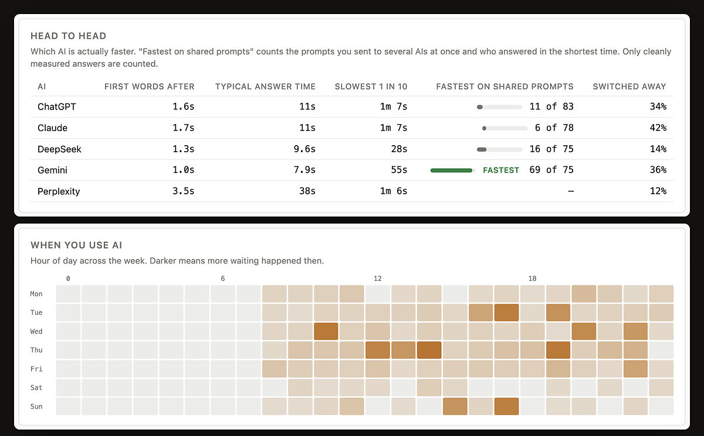

You already pay for more than one AI. Asking them the same thing means typing it five times, in five tabs. whileAI does that part for you, inside the sessions you are already signed in to.

Four steps, and you only do the first one.
Nothing to configure. whileAI uses the tabs and accounts you already have, so it never asks for a password or an API key.
One switch per AI in the extension panel. An AI you leave off receives nothing.
Write it in whichever AI you were going to use anyway. The same text goes to the others, each in its own tab, one at a time.
Type the next prompt whenever you like. If an AI is still answering, yours waits in the queue instead of colliding with it.

"ready" means that tab is signed in and can receive a prompt. If a site signs you out, the panel says so, so a prompt never disappears quietly.
Your plan shows in the corner, and the full dashboard is one click away. Answers that land while you are elsewhere are listed at the bottom.
That is where the name comes from. Start a prompt, switch to your real work, and get called back when the answer lands.

Every minute in an AI tab is one of three things: writing the prompt, waiting for the answer, or reading it. WhileAI measures all three, from timing alone. The measuring never looks at what you type or what the AI writes.


Sending prompts, the queue, the answers-ready list and the basic dashboard are free, with no time limit and no cap on prompts. The free plan sends each prompt to two AIs at a time.


Unlimited prompts to two AIs at a time. Queue, a switch per AI, the answers-ready list with its chime, the last 7 days of your dashboard, shareable summary cards, JSON export and delete.
All five AIs at once, your full history, what each subscription costs you per prompt, which AI answers first, a weekly report and your own alert rules. Every install starts with 14 days of Pro, no card.
This matters more than any feature, so it is worth being exact.
The ones people actually ask. If yours is not here, write to me.
Yes. Every AI tab is timed on its own, at the same moment, including the ones in the background that you are not looking at. If you send one prompt to four AIs, you get four separate timings.
The dashboard shows this two ways, because they are different questions. Time spent waiting adds up every AI's wait. Under it, on the clock merges the waits that overlapped. Four AIs that each take 10 seconds, all at once, is 40 seconds of waiting and 10 seconds on the clock. The first tells you how much answering you asked for; the second is how long you actually sat there.
Yes, that is the normal case. Your prompt is delivered to tabs you are not looking at, and the answers-ready list tells you when each one has answered. Chrome slows background tabs down a great deal; WhileAI times its own steps on a clock Chrome does not slow, so a tab you have not touched for an hour still receives the prompt straight away.
The WhileAI popup has an Answers ready list at the bottom: one line per answer that landed while you were not looking at that tab, naming the AI and how long it took. Click a line and you are in that conversation, and the line goes away. The toolbar icon shows the same count in green. If you also want to hear it, the dashboard has a switch for a short chime that plays once per answer, with a "Test the chime" button next to it.
No. DeepSeek remembers those two buttons from your last visit, and a slow thinking mode is rarely what you want when the same prompt is going to several AIs. Before WhileAI types a prompt there on your behalf it switches both off, the same click you would make, so the prompt goes out in the standard mode. It only does this on prompts it delivers, never while you are typing in DeepSeek yourself.
No. There is one switch per AI and an AI that is off receives nothing. Closing an AI's tab switches it off too. On the free plan a prompt reaches two other AIs at a time; if you switched on more, a notice tells you by name which ones were left out.
Writing is the time keys are being pressed in the message box. Waiting is from the moment you send until the answer stops arriving. Reading is time with the tab in front, the window focused, and some sign of life from you in the last minute. All three come from timing alone. WhileAI never reads what you type or what the AI writes, and a tab left open overnight does not count as eight hours of reading.
The share of your waiting that you spent on something else instead of watching the answer appear. A higher number is better. It only counts answers in tabs you were using yourself; prompts delivered to background tabs are left out, because "you left the tab" means nothing for a tab you were never in.
It will not judge a subscription on less than 14 days of use. Until then it shows what each prompt has cost you so far, scaled from the days it has. After two weeks it says which subscriptions are earning their keep and which you have barely opened.
The AI sites change their pages often. WhileAI checks itself, and when a site changes, a fix is usually published within hours and installs on its own, with no store update. Reloading the AI tab picks it up. If it has not come back by the next day, write to me.
Chrome, and browsers that install from the Chrome Web Store such as Edge, Brave and Arc. ChatGPT, Claude, Gemini, Perplexity and DeepSeek. It runs on those five sites only and asks for no "all sites" access. Every permission is explained on the privacy page.
Neither. It works inside the tabs you are already signed in to, the same way you would: it puts the text in the box and presses send. It never sees a password, and there is nothing to configure.
WhileAI does by machine what you would do by hand in your own account, one prompt at a time, at human pace. It does not solve CAPTCHAs, get around usage limits or hide what it is. When a site puts up a check or a limit, it stops and tells you. Each provider's terms are still yours to follow, and none of them is affiliated with WhileAI.
Using it is free: unlimited prompts to two AIs at a time, with the answers-ready list and the 7-day dashboard. Pro is $5 a month, $39 a year or $49 once, and adds all five AIs and the analysis. Every install starts with 14 days of Pro, no card.